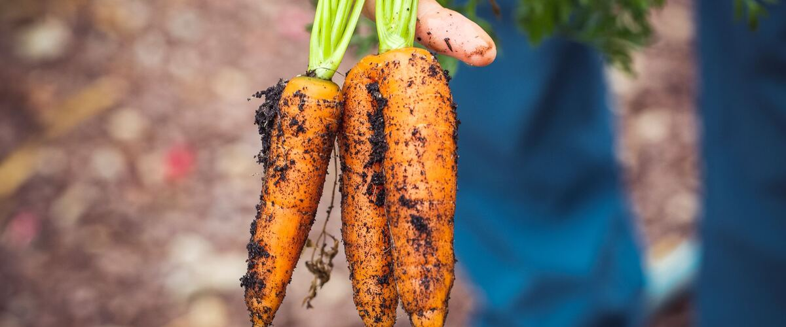

When to plant root vegetables in Oregon, Washington and Idaho
Carrots, beets, potatoes and other crops you dig. Pick a plant for its dates in every town we cover and a step-by-step growing guide.
- RadishesEasy
- CarrotsModerate
- BeetsModerate
- TurnipsEasy
- PotatoesEasy
- ParsnipsModerate
- Sweet potatoesTricky here


Planting order
When each one first goes in around Portland, starting indoors where that comes first. Colder towns run later.
- Late spring
- Sweet potatoes
Planting windows at a glance
Main planting window in five reference towns. Each plant's page has every town.
| Plant | Portland | Seattle and Tacoma | Bend and Redmond | Spokane | Boise and Meridian |
|---|---|---|---|---|---|
| Radishes | Mar 1 – Apr 26 | Mar 1 – Apr 26 | Apr 28 – Jun 23 | Apr 1 – May 27 | Mar 20 – May 15 |
| Carrots | Mar 15 – May 10 | Mar 15 – May 10 | May 12 – Jul 7 | Apr 15 – Jun 10 | Apr 1 – May 27 |
| Beets | Mar 15 – May 10 | Mar 15 – May 10 | May 12 – Jul 7 | Apr 15 – Jun 10 | Apr 1 – May 27 |
| Turnips | Mar 1 – Apr 12 | Mar 1 – Apr 12 | Apr 28 – Jun 9 | Apr 1 – May 13 | Mar 20 – May 1 |
| Potatoes | Mar 15 – Apr 26 | Mar 15 – Apr 26 | May 12 – Jun 23 | Apr 15 – May 27 | Apr 1 – May 13 |
| Parsnips | Mar 15 – Apr 26 | Mar 15 – Apr 26 | May 12 – Jun 23 | Apr 15 – May 27 | Apr 1 – May 13 |
| Sweet potatoes | May 25 – Jun 15 | May 25 – Jun 15 | Jun 16 – Jul 7 | May 30 – Jun 20 | May 10–31 |
Growing root vegetables in the Northwest
Root crops want loose, stone-free soil that drains well. Heavy Northwest clay is the most common reason carrots and parsnips come out short or forked, so dig deeply and mix in compost, or grow them in a raised bed. Avoid fresh manure right before planting, which tends to make roots hairy and split.
Most root crops are sown straight into the garden, because they don't like being transplanted. Carrot and parsnip seed is slow to sprout in cool soil and the seedbed must stay damp the whole time, which is the hardest part of growing them. Thinning early, to the spacing on each plant's page, makes the difference between real roots and a tangle of pencils. Potatoes are the exception: they grow from seed potatoes, and soil heaped around the stems keeps the tubers from turning green.
Fall is a good second season. Carrots and beets sown in midsummer sweeten in cold weather, and in milder western gardens many can stay in the ground and be dug through the winter. Radishes are the quickest win, ready in about four weeks.
Common questions
When do I plant carrots in the Northwest?
From early spring, once the soil can be worked, until about midsummer for a fall and winter crop. Keep the seedbed moist; carrot seed can take two to three weeks to sprout in cool soil.
Can I leave root crops in the ground over winter?
West of the Cascades, carrots, parsnips and beets often hold in the ground into winter under a layer of mulch. Parsnips taste sweeter after frost. In colder eastern gardens, dig them before the ground freezes.
Why are my carrots forked or hairy?
Rocks, clods or fresh manure in the soil. Grow them in loose, stone-free soil or a raised bed, and use well-rotted compost instead of fresh manure.
Other plant types
- Salad greens
- Cabbage family
- Onion family
- Peas and beans
- Tomatoes and summer crops
- Squash, cucumbers and melons
- Herbs
- Berries
- Perennial vegetables
- Fruit and nut trees
- Native plants
- Flowers